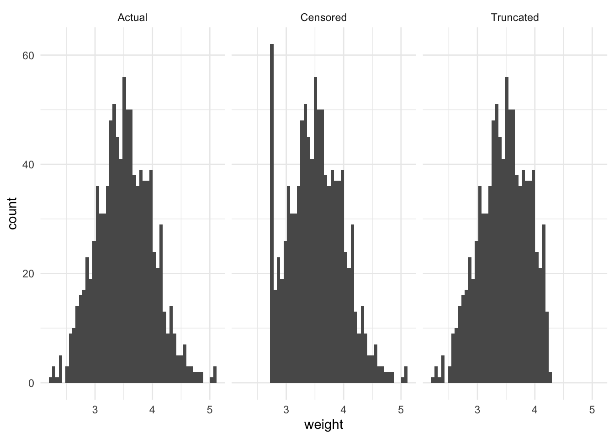
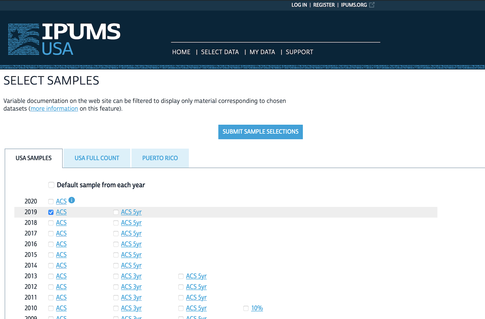
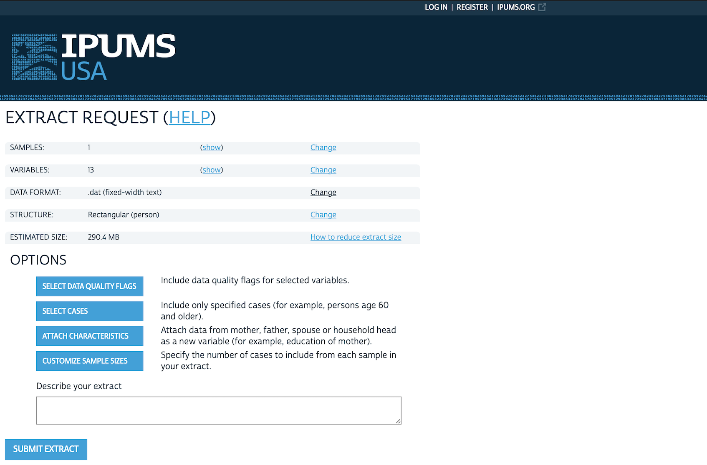
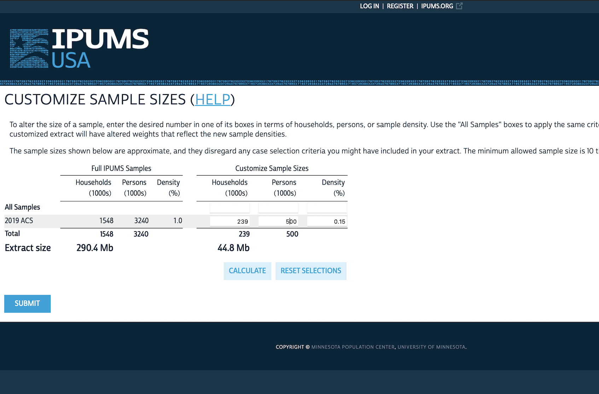
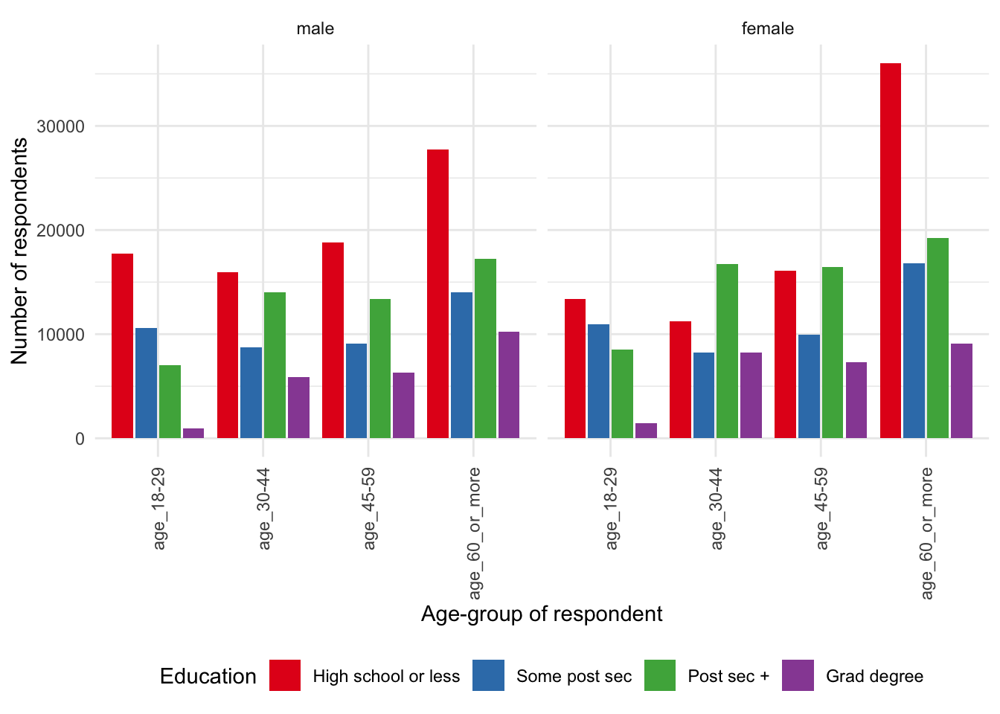
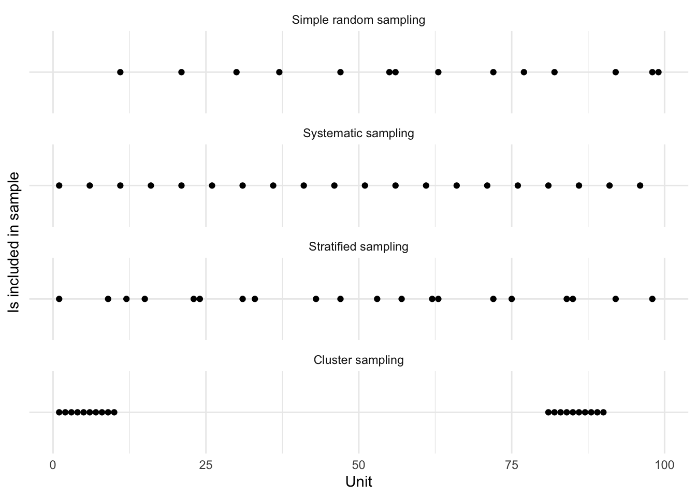
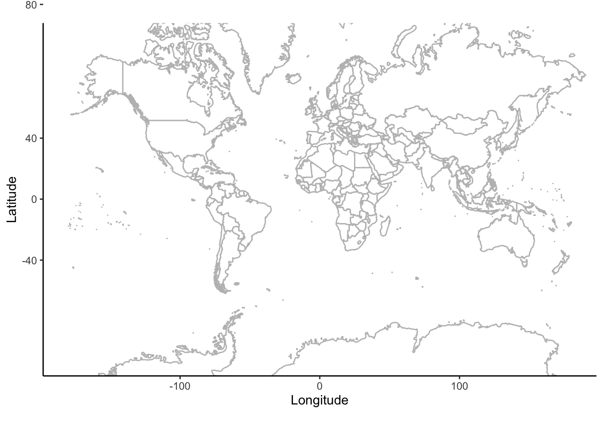
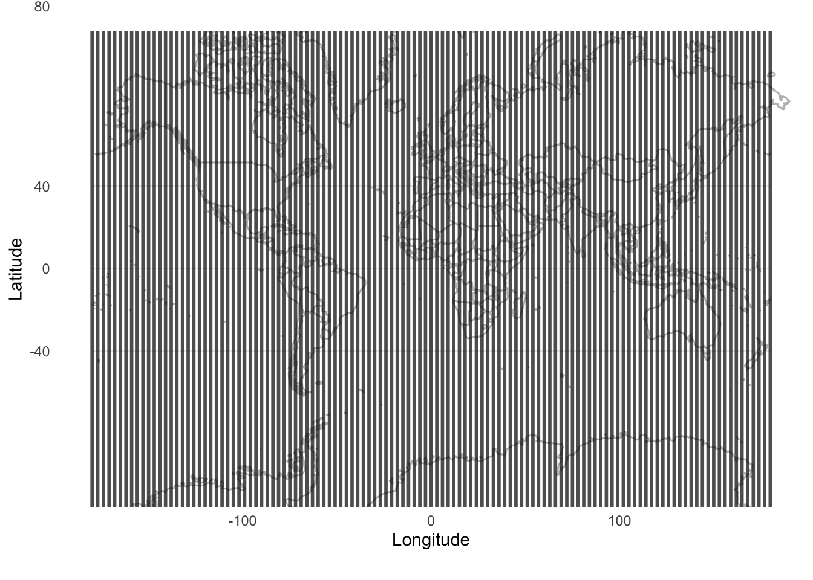
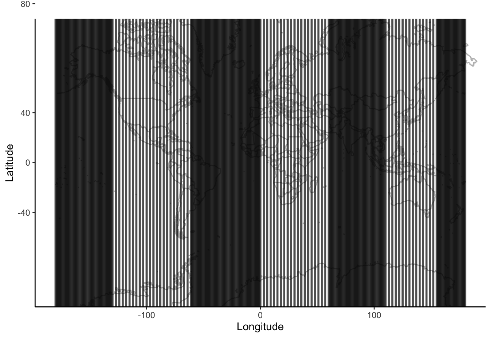
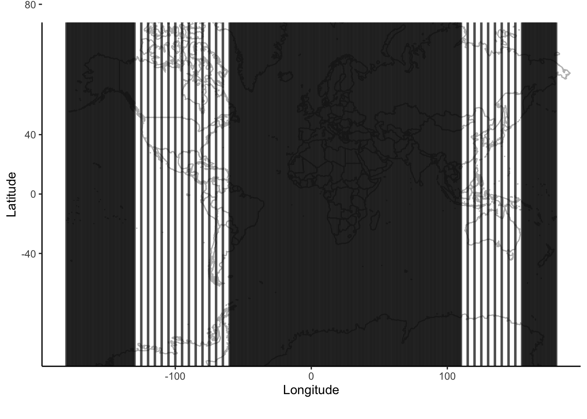

library(cancensus)
library(canlang)
library(knitr)
library(maps)
library(tidycensus)
library(tidyverse)6 Farm data
Prerequisites
- Watch Introduction to Sampling and Randomization, (Register 2020)
- This video provides an overview of sampling approaches with helpful examples.
- Read Working-Class Households in Reading, (Bowley 1913)
- This historical paper discusses a survey conducted in the United Kingdom in the early 1900s, including a particularly informative discussion of systematic sampling.
- Read On the Two Different Aspects of the Representative Method, (Neyman 1934)
- This paper provides an overview of stratified sampling. You should focus on the following parts: I “Introduction”, III “Different Aspects of the Representative Method”, V “Conclusion”, and Bowley’s discussion.
- Read Guide to the Census of Population, (Statistics Canada 2017)
- Focus on Chapter 10 “Data quality assessment”. Despite being written by the Canadian government about a particular census, this chapter describes and addresses concerns that are relevant to almost any survey.
- Read He, she, they: Using sex and gender in survey adjustment, (Kennedy et al. 2022)
- This paper describes some of the challenges when considering sex and gender in surveys, and makes suggestions for ways forward.
Key concepts and skills
- Before there is a dataset, there must be measurement, and this brings many challenges and concerns. One dataset that is designed to be complete in certain respects is a census. While not perfect, governments spend a lot of money on censuses and other official statistics, and they are a great foundational data source.
- Even when we cannot obtain such a dataset, we can use sampling to ensure that we can still make sensible claims. There are two varieties of this—probability and non-probability. Both have an important role. Key terminology and concepts include: target population, sampling frame, sample, simple random sampling, systematic sampling, stratified sampling, and cluster sampling.
Key packages and functions
- Base R (R Core Team 2023)
cancensus(von Bergmann, Shkolnik, and Jacobs 2021)canlang(Timbers 2020) (this package is not on CRAN so install it with:install.packages("devtools")thendevtools::install_github("ttimbers/canlang"))knitr(Xie 2023)maps(Becker et al. 2022)tidycensus(Walker and Herman 2022)tidyverse(Wickham et al. 2019)
6.1 Introduction
As we think of our world, and telling stories about it, one of the most difficult aspects is to reduce the beautiful complexity of it into a dataset that we can use. We need to know what we give up when we do this. And be deliberate and thoughtful as we proceed. Some datasets are so large that one specific data point does not matter—it could be swapped for another without any effect (Crawford 2021, 94). But this is not always reasonable: how different would your life be if you had a different mother?
We are often interested in understanding the implications of some dataset; making forecasts based on it or using that dataset to make claims about broader phenomena. Regardless of how we turn our world into data, we will usually only ever have a sample of the data that we need. Statistics provides formal approaches that we use to keep these issues front of mind and understand the implications. But it does not provide definitive guidance about broader issues, such as considering who profits from the data that were collected, and whose power it reflects.
In this chapter we first discuss measurement, and some of the concerns that it brings. We then turn to censuses, in which we typically try to obtain data about an entire population. We also discuss other government official statistics, and long-standing surveys. We describe datasets of this type as “farmed data”. Farmed datasets are typically well put together, thoroughly documented, and the work of collecting, preparing, and cleaning these datasets is mostly done for us. They are also, usually, conducted on a known release cycle. For instance, many countries release unemployment and inflation datasets monthly, GDP quarterly, and a census every five to ten years.
We then introduce statistical notions around sampling to provide a foundation that we will continually return to. Over the past one hundred years or so, statisticians have developed considerable sophistication for thinking about samples, and dealt with many controversies (Brewer 2013). In this chapter we consider probability and non-probability sampling and introduce certain key terminology and concepts.
This chapter is about data that are made available for us. Data are not neutral. For instance, archivists are now careful to consider archives not only as a source of fact, but also as part of the production of fact which occurred within a particular context especially constructed by the state (Stoler 2002). Thinking clearly about who is included in the dataset, and who is systematically excluded, is critical. Understanding, capturing, classifying, and naming data is an exercise in building a world and reflects power (Crawford 2021, 121), be that social, historical, financial, or legal.
For instance, we can consider the role of sex and gender in survey research. Sex is based on biological attributes and is assigned at birth, while gender is socially constructed and has both biological and cultural aspects (Lips 2020, 7). We may be interested in the relationship between gender, rather than sex, and some outcome. But the move toward a nuanced concept of gender in official statistics has only happened recently. Surveys that insist on a binary gender variable that is the same as sex, will not reflect those respondents who do not identify as such. Kennedy et al. (2022) provide a variety of aspects to consider when deciding what to do with gender responses, including: ethics, accuracy, practicality, and flexibility. But there is no universal best solution. Ensuring respect for the survey respondent should be the highest priority (Kennedy et al. 2022, 16).
Why do we even need classifications and groupings if it causes such concerns? Scott (1998) positions much of this as an outcome of the state, for its own purposes, wanting to make society legible and considers this a defining feature of modern states. For instance, Scott (1998) sees the use of surnames as arising because of the state’s desire for legible lists to use for taxation, property ownership, conscription, and censuses. The state’s desire for legibility also required imposing consistency on measurement. The modern form of metrology, which is “the study of how measurements are made, and how data are compared” (Plant and Hanisch 2020), began in the French Revolution when various measurements were standardized. This later further developed as part of Napoleonic state building (Scott 1998, 30). Prévost and Beaud (2015, 154) describe the essence of the change as one where knowledge went from being “singular, local, idiosyncratic\(\dots\) and often couched in literary form” to generalized, standardized, and numeric. That all said, it would be difficult to collect data without categorizable, measurable scales. A further concern is reification, where we forget that these measures must be constructed.
All datasets have shortcomings. In this chapter we develop comfort with “farmed data”. We use that term to refer to a dataset that has been developed specifically for the purpose of being used as data.
Even though these farmed datasets are put together for us to use, and can generally be easily obtained, it is nonetheless especially important for us to develop a thorough understanding of their construction. James Mill, the nineteenth century Scottish author, famously wrote The History of British India without having set foot in the country. He claimed:
Whatever is worth seeing or hearing in India, can be expressed in writing. As soon as every thing of importance is expressed in writing, a man who is duly qualified may attain more knowledge of India, in one year, in his closet in England, than he could obtain during the course of the longest life, by the use of his eyes and his ears in India.
Mill (1817, xv)
It may seem remarkable that he was considered an expert and his views had influence. Yet today, many will, say, use inflation statistics without ever having tried to track a few prices, use the responses from political surveys without themselves ever having asked a respondent a question, or use ImageNet without the experience of hand-labeling some of the images. We should always throw ourselves into the details of the data.
6.2 Measurement
Measurement is an old concern. Even Aristotle distinguished between quantities and qualities (Tal 2020). Measurement, and especially, the comparison of measurements, underpins all quantitative analysis. But deciding what to measure, and how to do it, is challenging.
Measurement is trickier than it seems. For instance, in music, David Peterson, Professor of Political Science, Iowa State University, make it clear how difficult it is to define a one-hit wonder. A surprising number of artists that may immediately come to mind, turn out to have at least one or two other songs that did reasonably well in terms of making it onto charts (Molanphy 2012). Should an analysis of all one-term governments include those that did not make it through a full term? How about those that only lasted a month, or even a week? How do we even begin to measure the extent of government transfers when so much of these are in-kind benefits (Garfinkel, Rainwater, and Smeeding 2006)? How can we measure how well represented a person is in a democracy despite that being the fundamental concern (Achen 1978)? And why should the standard definition used by the World Health Organization (WHO) of pregnancy-related and maternal deaths only include those that occur within 42 days of delivery, termination, or abortion when this has a substantial effect on the estimate (Gazeley et al. 2022)?
Philosophy brings more nuance and depth to their definitions of measurement (Tal 2020), but the International Organization Of Legal Metrology (2007, 44) define measurement as the “process of experimentally obtaining one or more quantity values that can reasonably be attributed to a quantity”, where a quantity is a “number and reference together”. It implies “comparison of quantities, including counting of entities”, and “presupposes a description of the quantity commensurate with the intended use of a measurement result, a measurement procedure, and a calibrated measuring system\(\dots\)”. This definition of measurement makes clear that we have a variety of concerns including instrumentation and units, and that we are interested in measurements that are valid and reliable.
Instrumentation refers to what we use to conduct the measurement. Thorough consideration of instrumentation is important because it determines what we can measure. For instance, Morange (2016, 63) describes how the invention of microscopes in the sixteenth century led to the observation of capillaries by Marcello Malpighi in 1661, cells by Robert Hooke in 1665, and bacteria by Antonie van Leeuwenhoek in 1677 (Lane 2015). And consider the measurement of time. Again we see the interaction between instrumentation and measurement. With a sundial it was difficult to be much more specific about elapsed time than an hour or so. But the gradual development of more accurate instruments of timekeeping would eventually enable some sports to differentiate competitors to the thousandth of the second, and through GPS, allow navigation that is accurate to within meters.
Oh, you think we have good data on that!
Knowing the time is a critical measurement. For instance, Formula 1 times laps to the thousandth of a second. And Michael Phelps, an American swimmer, won a gold medal at the Beijing Olympics by only one-hundredth of a second. Timing allows us to distinguish between outcomes even when the event does not happen concurrently. For instance, think back to the discussion of swimmers by Chambliss (1989) and how this would be impossible without knowing how long each event took each swimmer. Timing is also critical in finance where we need market participants to agree on whether an asset is available for sale. But the answer to “What time is it?” can be difficult to answer. The time, according to some individual, can be set to different sources, and so will differ depending on who you ask. Since the 1970s the definitive answer has been to use atomic time. A cesium second is defined by “9192 631 770 cycles of the hyperfine transition frequency in the ground state of cesium 133” (Levine, Tavella, and Milton 2022, 4). But the problem of clock synchronization—how to have all the non-atomic clocks match atomic time and each other—remains. Hopper (2022) provides an overview of how the Network Time Protocol (NTP) of Mills (1991) enables clock synchronization and some of the difficulties that exist for computer networks to discover atomic time. Another measure of time is astronomical time, which is based on the rotation of the Earth. But because the Earth spins inconsistently and other issues, adjustments have been made to ensure atomic and astronomical time match. This has resulted in the inclusions of positive leap seconds, and the possibility of a negative leap second, which have created problems (Levine, Tavella, and Milton 2022). As a result, at some point in the future astronomical and atomic time will be allowed to diverge (Gibney 2022; Mitchell 2022b).
A common instrument of measurement is a survey, and we discuss these further in Chapter 8. Another commonly-used instrument is sensors. For instance, climate scientists may be interested in temperature, humidity, or pressure. Much analysis of animal movement, such as Leos-Barajas et al. (2016), uses accelerometers. Sensors placed on satellites may be particularly concerned with images, and such data are available from the Landsat Program. Physicists are very concerned with measurement, and can be constrained not only by their instrumentation, but also storage capacity. For instance, the ATLAS detector at CERN is focused on the collision of particles, but not all of the measurements can be saved because that would result in 80TB per second (Colombo et al. 2016)! And in the case of A/B testing, which we discuss in Chapter 8, extensive use is made of cookies, beacons, system settings, and behavioral patterns. Another aspect of instrumentation is delivery. For instance, if using surveys, then should they be mailed or online? Should they be filled out by the respondent or by an enumerator?
The definition of measurement, provided by metrology, makes it clear that the second fundamental concern is a reference, which we refer to as units. The choice of units is related to both the research question of interest and available instrumentation. For instance, in the Tutorial in Chapter 1 we were concerned with measuring the growth of plants. This would not be well served by using kilometers or miles as a unit. If we were using a ruler, then we may be able to measure millimeters, but with calipers, we might be able to consider tens of micrometers.
6.2.1 Properties of measurements
Valid measurements are those where the quantity that we are measuring is related to the estimand and research question of interest. It speaks to appropriateness. Recall, from Chapter 4, that an estimand is the actual effect, such as the (unknowable) actual effect of smoking on life expectancy. It can be useful to think about estimands as what is actually of interest. This means that we need to ensure that we are measuring relevant aspects of an individual. For instance, the number of cigarettes that they smoked, and the number of years they lived, rather than, say, their opinion about smoking.
For some units, such as a meter or a second, there is a clear definition. And when that definition evolves it is widely agreed on (Mitchell 2022a). But for other aspects that we may wish to measure it is less clear and so the validity of the measurement becomes critical. At one point in the fourteenth century attempts were made to measure grace and virtue (Crosby 1997, 14)! More recently, we try to measure intelligence or even the quality of a university. That is not to say there are not people with more or less grace, virtue, and intelligence than others, and there are certainly better and worse universities. But the measurement of these is difficult.
The U.S. News and World Report tries to quantify university quality based on aspects such as class size, number of faculty with a PhD, and number of full-time faculty. But an issue with such constructed measures, especially in social settings, is that it changes the incentives of those being measured. For instance, Columbia University increased from 18th in 1988 to 2nd in 2022. But Michael Thaddeus, Professor of Mathematics, Columbia University, showed how there was a difference, in Columbia’s favor, between what Columbia reported to U.S. News and World Report and what was available through other sources (Hartocollis 2022).
Such concerns are of special importance in psychology because there is no clear measure of many fundamental concepts. Fried, Flake, and Robinaugh (2022) review the measurement of depression and find many concerns including a lack of validity and reliability. This is not to say that we should not try to measure such things, but we should ensure transparency about measurement decisions. For instance, Flake and Fried (2020) recommend answering various clarifying questions whenever measurements have to be constructed. These include questioning the underlying construct of interest, the decision process that led to the measure, what alternatives were considered, the quantification process, and the scale. These questions are especially important when the measure is being constructed for a particular purpose, rather than being adopted from elsewhere. This is because of the concern that the measure will be constructed in a way that provides a pre-ordained outcome.
Reliability draws on the part of the definition of measurement that reads “process of experimentally obtaining\(\dots\)”. It implies some degree of consistency and means that multiple measurements of one particular aspect, at one particular time, should be essentially the same. If two enumerators count the number of shops on a street, then we would hope that their counts are the same. And if they were different then we would hope we could understand the reason for the difference. For instance, perhaps one enumerator misunderstood the instructions and incorrectly counted only shops that were open. To consider another example, demographers are often concerned with the migration of people between countries, and economists are often concerned with international trade. It is concerning the number of times that the in-migration or imports data of Country A from Country B do not match the out-migration or exports data of Country B to Country A.
Oh, you think we have good data on that!
It is common for the pilot of a plane to announce the altitude to their passengers. But the notion and measurement of altitude is deceptively complicated, and underscores the fact that measurement occurs within a broader context (Vanhoenacker 2015). For instance, if we are interested in how many meters there are between the plane and the ground, then should we measure the difference between the ground and where the pilot is sitting, which would be most relevant for the announcement, or to the bottom of the wheels, which would be most relevant for landing? What happens if we go over a mountain? Even if the plane has not descended, such a measure—the number of meters between the plane and the ground—would claim a reduction in altitude and make it hard to vertically separate multiple planes. We may be interested in a comparison to sea level. But sea level changes because of the tide, and is different at different locations. As such, a common measure of altitude is flight level, which is determined by the amount of air pressure. And because air pressure is affected by weather, season, and location, the one flight level may be associated with very different numbers of meters to the ground over the course of a flight. The measures of altitude used by planes serve their purpose of enabling relatively safe air travel.
6.2.2 Measurement error
Measurement error is the difference between the value we observe and the actual value. Sometimes it is possible to verify certain responses. If the difference is consistent between the responses that we can verify and those that we cannot, then we are able to estimate the extent of overall measurement error. For instance, Sakshaug, Yan, and Tourangeau (2010) considered a survey of university alumni and compared replies about a respondent’s grades with their university record. They find that the mode of the survey—telephone interview conducted by a human, telephone interview conducted by a computer, or an internet survey—affected the extent of the measurement error.
Such error can be particularly pervasive when an enumerator fills out the survey form on behalf of the respondent. This is especially of concern around race. For instance, Davis (1997, 177) describes how Black people in the United States may limit the extent to which they describe their political and racial belief to white interviewers.
Another example is censored data, which is when we have some partial knowledge of the actual value. Right-censored data is when we know that the actual value is above some observed value, but we do not know by how much. For instance, immediately following the Chernobyl disaster in 1986, the only available instruments to measure radiation had a certain maximum limit. While the radiation was measured as being at that (maximum) level, the implication was that the actual value was much higher.
Right-censored data are often seen in medical studies. For instance, say some experiment is conducted, and then patients are followed for ten years. At the end of that ten-year period all we know is whether a patient lived at least ten years, not the exact length of their life. Left-censored data is the opposite situation. For instance, consider a thermometer that only went down to freezing. Even when the actual temperature was less, the thermometer would still register that as freezing.
A slight variation of censored data is winsorizing data. This occurs when we observe the actual value, but we change it to a less extreme one. For instance, if we were considering age then we may change the age of anyone older than 100 to be 100. We may do this if we are worried that values that were too large would have too significant of an effect.
Truncated data is a slightly different situation in which we do not even record those values. For instance, consider a situation in which we were interested in the relationship between a child’s age and height. Our first question might be “what is your age?” and if it turns out the respondent is an adult, then we would not continue to ask height. Truncated data are especially closely related to selection bias. For instance, consider a student who drops a course—their opinion is not measured on course evaluations.
To illustrate the difference between these concepts, consider a situation in which the actual distribution of newborn baby weight has a normal distribution, centered around 3.5kg. Imagine there is some defect with the scale, such that any value less than or equal to 2.75kg is assigned 2.75kg. And imagine there is some rule such that any baby expected to weigh more than 4.25kg is transferred to a different hospital to be born. These three scenarios are illustrated in Figure 6.1. We may also be interested in considering the mean weight, which highlights the bias (Table 6.1).
set.seed(853)
newborn_weight <-
tibble(
weight = rep(
x = rnorm(n = 1000, mean = 3.5, sd = 0.5),
times = 3),
measurement = rep(
x = c("Actual", "Censored", "Truncated"),
each = 1000)
)
newborn_weight <-
newborn_weight |>
mutate(
weight = case_when(
weight <= 2.75 & measurement == "Censored" ~ 2.75,
weight >= 4.25 & measurement == "Truncated" ~ NA_real_,
TRUE ~ weight
)
)
newborn_weight |>
ggplot(aes(x = weight)) +
geom_histogram(bins = 50) +
facet_wrap(vars(measurement)) +
theme_minimal()
newborn_weight |>
summarise(mean = mean(weight, na.rm = TRUE),
.by = measurement) |>
kable(
col.names = c("Measurement", "Mean"),
digits = 3
)| Measurement | Mean |
|---|---|
| Actual | 3.521 |
| Censored | 3.530 |
| Truncated | 3.455 |
6.2.3 Missing data
Regardless of how good our data acquisition process is, there will be missing data. That is, observations that we know we do not have. But a variable must be measured, or at least thought about and considered, in order to be missing. With insufficient consideration, there is the danger of missing data that we do not even know are missing because the variables were never considered. They are missing in a “dog that did not bark” sense. This is why it is so important to think about the situation, sketch and simulate, and work with subject-matter experts.
Non-response could be considered a variant of measurement error whereby we observe a null, even though there should be an actual value. But it is usually considered in its own right. And there are different extents of non-response: from refusing to even respond to the survey, through to just missing one question. Non-response is a key issue, especially with non-probability samples, because there is usually good reason to consider that people who do not respond are systematically different to those who do. And this serves to limit the extent to which the survey can be used to speak to more than just survey respondents. Gelman et al. (2016) go so far as to say that much of the changes in public opinion that are reported in the lead-up to an election are not people changing their mind, but differential non-response. That is, individual choosing whether to respond to a survey at all depending on the circumstances, not just choosing which survey response to choose. The use of pre-notification and reminders may help address non-response in some circumstances (Koitsalu et al. 2018; Frandell et al. 2021).
Data might be missing because a respondent did not want to respond to one particular question, a particular collection of related questions, or the entire survey, although these are not mutually exclusive nor collectively exhaustive (Newman 2014). In an ideal situation data are Missing Completely At Random (MCAR). This rarely occurs, but if it does, then inference should still be reflective of the broader population. It is more likely that data are Missing At Random (MAR) or Missing Not At Random (MNAR). The extent to which we must worry about that differs. For instance, if we are interested in the effect of gender on political support, then it may be that men are less likely to respond to surveys, but this is not related to who they will support. If that differential response is only due to being a man, and not related to political support, then we may be able to continue, provided we include gender in the regression, or are able to post-stratify based on gender. That said, the likelihood of this independence holding is low, and it is more likely, as in Gelman et al. (2016), that there is a relationship between responding to the survey and political support. In that more likely case, we may have a more significant issue. One approach would be to consider additional explanatory variables. It is tempting to drop incomplete cases, but this may further bias the sample, and requires justification and the support of simulation. Data imputation could be considered, but again may bias the sample. Ideally we could rethink, and improve, the data collection process.
We return to missing data in Chapter 11.
6.3 Censuses and other government data
There are a variety of sources of data that have been produced for the purposes of being used as datasets. One thinks here especially of censuses of population. Whitby (2020, 30–31) describes how the earliest censuses for which we have written record are from China’s Yellow River Valley. One motivation for censuses was taxation, and Jones (1953) describes census records from the late third or early fourth century A.D. which enabled a new system of taxation. Detailed records, such as censuses, have also been abused. For instance, Luebke and Milton (1994, 25) set out how the Nazis used censuses and police registration datasets to “locate groups eventually slated for deportation and death”. And Bowen (2022, 17) describes how the United States Census Bureau provided information that contributed to the internship of Japanese Americans. President Clinton apologized for this in the 1990s.
Another source of data deliberately put together to be a dataset include official statistics like surveys of economic conditions such as unemployment, inflation, and GDP. Interestingly, Rockoff (2019) describes how these economic statistics were not actually developed by the federal government, even though governments typically eventually took over that role. Censuses and other government-run surveys have the power, and financial resources, of the state behind them, which enables them to be thorough in a way that other datasets cannot be. For instance, the 2020 United States Census is estimated to have cost US$15.6 billion (Hawes 2020). But this similarly brings a specific perspective. Census data, like all data, are not unimpeachable. Common errors include under- and over-enumeration, as well as misreporting (Steckel 1991). There are various measures and approaches used to assess quality (Statistics Canada 2017).
Oh, you think we have good data on that!
Censuses of population are critical, but not unimpeachable. Anderson and Fienberg (1999) describe how the history of the census in the United States is one of undercount, and that even George Washington complained about this in the 1790s. The extent of the undercount was estimated due to the Selective Service registration system used for conscription in World War II. Those records were compared with census records, and it was found that there were about half a million more men recorded for conscription purposes than in the census. This was race-specific, with an average undercount of around 3 per cent, but an undercount of Black men of draft age of around 13 per cent (Anderson and Fienberg 1999, 29). This became a political issue in the 1960s, and race and ethnicity related questions were of special concern in the 1990s. Nobles (2002, 47) discusses how counting by race first requires that race exists, but that this may be biologically difficult to establish. Despite how fundamental race is to the United States census it is not something that is “fixed” and “objective” but instead has influences from class, social, legal, structural, and political aspects (Nobles 2002, 48).
Another similarly large and established source of data are from long-running large surveys. These are conducted on a regular basis, and while not usually directly conducted by the government, they are usually funded, one way or another, by the government. For instance, here we often think of electoral surveys, such as the Canadian Election Study, which has run in association with every federal election since 1965, and similarly the British Election Study which has been associated with every general election since 1964.
More recently there has been a large push toward open data in government. The underlying principle—that the government should make available the data that it has—is undeniable. But the term has become a little contentious because of how it has occurred in practice. Governments only provide data that they want to provide. We may even sometimes see manipulation of data to suit a government’s narrative (Kalgin 2014; Zhang et al. 2019; Berdine, Geloso, and Powell 2018). One way to get data that the government has, but does not necessarily want to provide, is to submit a Freedom of Information (FOI) request (Walby and Luscombe 2019). For instance, Cardoso (2020) use data from FOI to find evidence of systematic racism in the Canadian prison system.
While farmed datasets have always been useful, they were developed for a time when much analysis was conducted without the use of programming languages. Many R packages have been developed to make it easier to get these datasets into R. Here we cover a few that are especially useful.
6.3.1 Canada
The first census in Canada was conducted in 1666. This was also the first modern census where every individual was recorded by name, although it does not include Aboriginal peoples (Godfrey 1918, 179). There were 3,215 inhabitants that were counted, and the census asked about age, sex, marital status, and occupation (Statistics Canada 2017). In association with Canadian Confederation, in 1867 a decennial census was required so that political representatives could be allocated for the new Parliament. Regular censuses have occurred since then.
We can explore some data on languages spoken in Canada from the 2016 Census using canlang. This package is not on CRAN, but can be installed from GitHub with: install.packages("devtools") then devtools::install_github("ttimbers/canlang").
After loading canlang we can use the can_lang dataset. This provides the number of Canadians who use each of 214 languages.
can_lang# A tibble: 214 × 6
category language mother_tongue most_at_home most_at_work lang_known
<chr> <chr> <dbl> <dbl> <dbl> <dbl>
1 Aboriginal langu… Aborigi… 590 235 30 665
2 Non-Official & N… Afrikaa… 10260 4785 85 23415
3 Non-Official & N… Afro-As… 1150 445 10 2775
4 Non-Official & N… Akan (T… 13460 5985 25 22150
5 Non-Official & N… Albanian 26895 13135 345 31930
6 Aboriginal langu… Algonqu… 45 10 0 120
7 Aboriginal langu… Algonqu… 1260 370 40 2480
8 Non-Official & N… America… 2685 3020 1145 21930
9 Non-Official & N… Amharic 22465 12785 200 33670
10 Non-Official & N… Arabic 419890 223535 5585 629055
# ℹ 204 more rowsWe can quickly see the top-ten most common languages to have as a mother tongue.
can_lang |>
slice_max(mother_tongue, n = 10) |>
select(language, mother_tongue)# A tibble: 10 × 2
language mother_tongue
<chr> <dbl>
1 English 19460850
2 French 7166700
3 Mandarin 592040
4 Cantonese 565270
5 Punjabi (Panjabi) 501680
6 Spanish 458850
7 Tagalog (Pilipino, Filipino) 431385
8 Arabic 419890
9 German 384040
10 Italian 375635We could combine two datasets: region_lang and region_data, to see if the five most common languages differ between the largest region, Toronto, and the smallest, Belleville.
region_lang |>
left_join(region_data, by = "region") |>
slice_max(c(population)) |>
slice_max(mother_tongue, n = 5) |>
select(region, language, mother_tongue, population) |>
mutate(prop = mother_tongue / population)# A tibble: 5 × 5
region language mother_tongue population prop
<chr> <chr> <dbl> <dbl> <dbl>
1 Toronto English 3061820 5928040 0.516
2 Toronto Cantonese 247710 5928040 0.0418
3 Toronto Mandarin 227085 5928040 0.0383
4 Toronto Punjabi (Panjabi) 171225 5928040 0.0289
5 Toronto Italian 151415 5928040 0.0255region_lang |>
left_join(region_data, by = "region") |>
slice_min(c(population)) |>
slice_max(mother_tongue, n = 5) |>
select(region, language, mother_tongue, population) |>
mutate(prop = mother_tongue / population)# A tibble: 5 × 5
region language mother_tongue population prop
<chr> <chr> <dbl> <dbl> <dbl>
1 Belleville English 93655 103472 0.905
2 Belleville French 2675 103472 0.0259
3 Belleville German 635 103472 0.00614
4 Belleville Dutch 600 103472 0.00580
5 Belleville Spanish 350 103472 0.00338We can see a considerable difference between the proportions, with a little over 50 per cent of those in Toronto having English as their mother tongue, compared with around 90 per cent of those in Belleville.
In general, data from Canadian censuses are not as easily available through the relevant government agency as in other countries, although the Integrated Public Use Microdata Series (IPUMS), which we discuss later, provides access to some. Statistics Canada, which is the government agency that is responsible for the census and other official statistics, freely provides an “Individuals File” from the 2016 census as a Public Use Microdata File (PUMF), but only in response to request. And while it is a 2.7 per cent sample from the 2016 census, this PUMF provides limited detail.
Another way to access data from the Canadian census is to use cancensus. It requires an API key, which can be requested by creating an account and then going to “edit profile”. The package has a helper function that makes it easier to add the API key to an “.Renviron” file, which we will explain in more detail in Chapter 7.
After installing and loading cancensus we can use get_census() to get census data. We need to specify a census of interest, and a variety of other arguments. For instance, we could get data from the 2016 census about Ontario, which is the largest Canadian province by population.
set_api_key("ADD_YOUR_API_KEY_HERE", install = TRUE)
ontario_population <-
get_census(
dataset = "CA16",
level = "Regions",
vectors = "v_CA16_1",
regions = list(PR = c("35"))
)
ontario_population# A tibble: 1 × 9
GeoUID Type `Region Name` `Area (sq km)` Population Dwellings Households
<chr> <fct> <fct> <dbl> <dbl> <dbl> <dbl>
1 35 PR Ontario 986722. 13448494 5598391 5169174
# ℹ 2 more variables: C_UID <chr>, `v_CA16_1: Age Stats` <dbl>Data for censuses since 1996 are available, and list_census_datasets() provides the metadata that we need to provide to get_census() to access these. Data are available based on a variety of regions, and list_census_regions() provides the metadata that we need. Finally, list_census_vectors() provides the metadata about the variables that are available.
6.3.2 United States
6.3.2.1 Census
The requirement for a census is included in the United States Constitution, although births and deaths were legally required to be registered in what became Massachusetts as early as 1639 (Gutman 1958). After installing and loading it we can use tidycensus to get started with access to United States census data. As with cancensus, we first need to obtain an API key from the Census Bureau API and store it locally using a helper function.
Having set that up, we can use get_decennial() to obtain data on variables of interest. As an example, we could gather data about the average household size in 2010 overall, and by owner or renter, for certain states (Figure 6.2).
census_api_key("ADD_YOUR_API_KEY_HERE")
us_ave_household_size_2010 <-
get_decennial(
geography = "state",
variables = c("H012001", "H012002", "H012003"),
year = 2010
)
us_ave_household_size_2010 |>
filter(NAME %in% c("District of Columbia", "Utah", "Massachusetts")) |>
ggplot(aes(y = NAME, x = value, color = variable)) +
geom_point() +
theme_minimal() +
labs(
x = "Average household size", y = "State", color = "Household type"
) +
scale_color_brewer(
palette = "Set1", labels = c("Total", "Owner occupied", "Renter occupied")
)
Walker (2022) provides further detail about analyzing United States census data with R.
6.3.2.2 American Community Survey
The United States is in the enviable situation where there is usually a better approach than using the census and there is a better way than having to use government statistical agency websites. IPUMS provides access to a wide range of datasets, including international census microdata. In the specific case of the United States, the American Community Survey (ACS) is a survey whose content is comparable to the questions asked on many censuses, but it is available on an annual basis, compared with a census which could be quite out-of-date by the time the data are available. It ends up with millions of responses each year. Although the ACS is smaller than a census, the advantage is that it is available on a more timely basis. We access the ACS through IPUMS.
Shoulders of giants
Steven Ruggles is Regents Professor of History and Population Studies at the University of Minnesota and is in charge of IPUMS. After earning a PhD in historical demography from the University of Pennsylvania in 1984, he was appointed as an assistant professor at the University of Minnesota, and promoted to full professor in 1995. The initial IPUMS data release was in 1993 (Sobek and Ruggles 1999). Since then it has grown and now includes social and economic data from many countries. Ruggles was awarded a MacArthur Foundation Fellowship in 2022.
Go to IPUMS, then “IPUMS USA”, and click “Get Data”. We are interested in a sample, so go to “SELECT SAMPLE”. Un-select “Default sample from each year” and instead select “2019 ACS” and then “SUBMIT SAMPLE SELECTIONS” (Figure 6.3 (a)).






We might be interested in data based on state. We would begin by looking at “HOUSEHOLD” variables and selecting “GEOGRAPHIC” (Figure 6.3 (b)). We add “STATEICP” to our “cart” by clicking the plus, which will then turn into a tick (Figure 6.3 (c)). We might then be interested in data on a “PERSON” basis, for instance, “DEMOGRAPHIC” variables such as “AGE”, which we should add to our cart. We also want “SEX” and “EDUC” (both are in “PERSON”).
When we are done, we can click “VIEW CART”, and then click “CREATE DATA EXTRACT” (Figure 6.3 (d)). At this point there are two aspects that we likely want to change:
- Change the “DATA FORMAT” from “.dat” to “.dta” (Figure 6.3 (e)).
- Customize the sample size as we likely do not need three million responses, and could just change it to, say, 500,000 (Figure 6.3 (f)).
Briefly check the dimensions of the request. It should not be much more than around 40MB. If it is then check whether there are variables accidentally selected that are not needed or further reduce the number of observations.
Finally, we want to include a descriptive name for the extract, for instance, “2023-05-15: State, age, sex, education”, which specifies the date we made the extract and what is in the extract. After that we can click “SUBMIT EXTRACT”.
We will be asked to log in or create an account, and after doing that will be able to submit the request. IPUMS will email when the extract is available, after which we can download it and read it into R in the usual way. We assume the dataset has been saved locally as “usa_00015.dta” (your dataset may have a slightly different filename).
It is critical that we cite this dataset when we use it. For instance we can use the following BibTeX entry for Ruggles et al. (2021).
@misc{ipumsusa,
author = {Ruggles, Steven and Flood, Sarah and Foster, Sophia and Goeken, Ronald and Pacas, Jose and Schouweiler, Megan and Sobek, Matthew},
year = 2021,
title = {IPUMS USA: Version 11.0},
publisher = {Minneapolis, MN: IPUMS},
doi = {10.18128/d010.v11.0},
url = {https://usa.ipums.org},
language = {en},
}We will briefly tidy and prepare this dataset because we will use it in Chapter 15. Our code is based on Mitrovski, Yang, and Wankiewicz (2020).
ipums_extract <- read_dta("usa_00015.dta")
ipums_extract <-
ipums_extract |>
select(stateicp, sex, age, educd) |>
to_factor()
ipums_extract# A tibble: 500,221 × 4
stateicp sex age educd
* <fct> <fct> <fct> <fct>
1 alabama male 77 grade 9
2 alabama male 62 1 or more years of college credit, no degree
3 alabama male 25 ged or alternative credential
4 alabama female 20 1 or more years of college credit, no degree
5 alabama male 37 1 or more years of college credit, no degree
6 alabama female 19 regular high school diploma
7 alabama female 67 regular high school diploma
8 alabama female 20 1 or more years of college credit, no degree
9 alabama male 66 grade 8
10 alabama male 58 regular high school diploma
# ℹ 500,211 more rowscleaned_ipums <-
ipums_extract |>
mutate(age = as.numeric(age)) |>
filter(age >= 18) |>
rename(gender = sex) |>
mutate(
age_group = case_when(
age <= 29 ~ "18-29",
age <= 44 ~ "30-44",
age <= 59 ~ "45-59",
age >= 60 ~ "60+",
TRUE ~ "Trouble"
),
education_level = case_when(
educd %in% c(
"nursery school, preschool", "kindergarten", "grade 1",
"grade 2", "grade 3", "grade 4", "grade 5", "grade 6",
"grade 7", "grade 8", "grade 9", "grade 10", "grade 11",
"12th grade, no diploma", "regular high school diploma",
"ged or alternative credential", "no schooling completed"
) ~ "High school or less",
educd %in% c(
"some college, but less than 1 year",
"1 or more years of college credit, no degree"
) ~ "Some post sec",
educd %in% c("associate's degree, type not specified",
"bachelor's degree") ~ "Post sec +",
educd %in% c(
"master's degree",
"professional degree beyond a bachelor's degree",
"doctoral degree"
) ~ "Grad degree",
TRUE ~ "Trouble"
)
) |>
select(gender, age_group, education_level, stateicp) |>
mutate(across(c(
gender, stateicp, education_level, age_group),
as_factor)) |>
mutate(age_group =
factor(age_group, levels = c("18-29", "30-44", "45-59", "60+")))
cleaned_ipums# A tibble: 407,354 × 4
gender age_group education_level stateicp
<fct> <fct> <fct> <fct>
1 male 60+ High school or less alabama
2 male 60+ Some post sec alabama
3 male 18-29 High school or less alabama
4 female 18-29 Some post sec alabama
5 male 30-44 Some post sec alabama
6 female 18-29 High school or less alabama
7 female 60+ High school or less alabama
8 female 18-29 Some post sec alabama
9 male 60+ High school or less alabama
10 male 45-59 High school or less alabama
# ℹ 407,344 more rowsWe will draw on this dataset in Chapter 15, so we will save it.
write_csv(x = cleaned_ipums,
file = "cleaned_ipums.csv")We can also have a look at some of the variables (Figure 6.4).
cleaned_ipums |>
ggplot(mapping = aes(x = age_group, fill = gender)) +
geom_bar(position = "dodge2") +
theme_minimal() +
labs(
x = "Age-group of respondent",
y = "Number of respondents",
fill = "Education"
) +
facet_wrap(vars(education_level)) +
guides(x = guide_axis(angle = 90)) +
theme(legend.position = "bottom") +
scale_fill_brewer(palette = "Set1")
Full count data—that is the entire census—are available through IPUMS for United States censuses conducted between 1850 and 1940, with the exception of 1890. Most of the 1890 census records were destroyed due to a fire in 1921. One per cent samples are available for all censuses through to 1990. ACS data are available from 2000.
6.4 Sampling essentials
Statistics is at the heart of telling stories with data because it is almost never possible to get all the data that we would like. Statisticians have spent considerable time and effort thinking about the properties that various samples of data will have and how they enable us to speak to implications for the broader population.
Let us say that we have some data. For instance, a particular toddler goes to sleep at 6:00pm every night. We might be interested to know whether that bedtime is common among all toddlers, or if we have an unusual toddler. If we only had one toddler then our ability to use their bedtime to speak about all toddlers would be limited.
One approach would be to talk to friends who also have toddlers. And then talk to friends-of-friends. How many friends, and friends-of-friends, do we have to ask before we can begin to feel comfortable that we can speak about some underlying truth of toddler bedtime?
Wu and Thompson (2020, 3) describe statistics as “the science of how to collect and analyze data and draw statements and conclusions about unknown populations.” Here “population” is used in a statistical sense and refers to some infinite group that we can never know exactly, but that we can use the probability distributions of random variables to describe the characteristics of. We discuss probability distributions in more detail in Chapter 12. Fisher ([1925] 1928, 41) goes further and says:
[t]he idea of an infinite population distributed in a frequency distribution in respect of one or more characters is fundamental to all statistical work. From a limited experience,\(\dots\) we may obtain some idea of the infinite hypothetical population from which our sample is drawn, and so of the probable nature of future samples to which our conclusions are to be applied.
Another way to say this is that statistics involves getting some data and trying to say something sensible based on it even though we can never have all of the data.
Three pieces of critical terminology are:
- “Target population”: The collection of all items about which we would like to speak.
- “Sampling frame”: A list of all the items from the target population that we could get data about.
- “Sample”: The items from the sampling frame that we get data about.
A target population is a finite set of labelled items, of size \(N\). For instance, in theory we could add a label to all the books in the world: “Book 1”, “Book 2”, “Book 3”, \(\dots\), “Book \(N\)”. There is a difference between the use of the term population here, and that of everyday usage. For instance, one sometimes hears those who work with census data say that they do not need to worry about sampling because they have the whole population of the country. This is a conflation of the terms, as what they have is the sample gathered by the census of the population of a country. While the goal of a census is to get every unit—and if this was achieved then sampling error would be less of an issue—there would still be many other issues. Even if a census was done perfectly and we got data about every unit in the target population, there are still issues, for instance due to measurement error, and it being a sample at a particular time. Groves and Lyberg (2010) provide a discussion of the evolution of total survey error.
In the same way that we saw how difficult it can be to define what to measure, it can be difficult to define a target population. For instance, say we have been asked to find out about the consumption habits of university students. How can we define that target population? If someone is a student, but also works full time, then are they in the population? What about mature-aged students, who might have different responsibilities? Some aspects that we might be interested in are formally defined to an extent that is not always commonly realized. For instance, whether an area is classified as urban or rural is often formally defined by a country’s statistical agency. But other aspects are less clear. Gelman, Hill, and Vehtari (2020, 24) discuss the difficulty of how we might classify someone as a “smoker”. If a 15-year-old has had 100 cigarettes over their lifetime, then we need to treat them differently than if they have had none. But if a 90-year-old has had 100 cigarettes over their lifetime, then are they likely different to a 90-year-old who has had none? At what age, and number of cigarettes, do these answers change?
Consider if we want to speak to the titles of all the books ever written. Our target population is all books ever written. But it is almost impossible for us to imagine that we could get information about the title of a book that was written in the nineteenth century, but that the author locked in their desk and never told anyone about. One sampling frame could be all books in the Library of Congress Online Catalog, another could be the 25 million books that were digitized by Google (Somers 2017). Our sample may be the tens of thousands of books that are available through Project Gutenberg, which we will use in later chapters.
To consider another example, consider wanting to speak of the attitudes of all Brazilians who live in Germany. The target population is all Brazilians who live in Germany. One possible source of information would be Facebook and so in that case, the sampling frame might be all Brazilians who live in Germany who have Facebook. And then our sample might be all Brazilians who live in Germany who have Facebook who we can gather data about. The target population and the sampling frame will be different because not all Brazilians who live in Germany will have Facebook. And the sampling frame will be different to the sample because we will likely not be able to gather data about all Brazilians who live in Germany and have Facebook.
6.4.1 Sampling in Dublin and Reading
To be clearer, we consider two examples: a 1798 count of the number of inhabitants of Dublin, Ireland (Whitelaw 1805), and a 1912 count of working-class households in Reading, England (Bowley 1913).
6.4.1.1 Survey of Dublin in 1798
In 1798 the Reverend James Whitelaw conducted a survey of Dublin, Ireland, to count its population. Whitelaw (1805) describes how population estimates at the time varied considerably. For instance, the estimated size of London at the time ranged from 128,570 to 300,000 people. Whitelaw expected that the Lord Mayor of Dublin could compel the person in charge of each house to affix a list of the inhabitants of that house to the door, and then Whitelaw could simply use this.
Instead, he found that the lists were “frequently illegible, and generally short of the actual number by a third, or even one-half”. And so instead he recruited assistants, and they went door-to-door making their own counts. The resulting estimates are particularly informative (Figure 6.5). The total population of Dublin in 1798 was estimated at 182,370.

One aspect worth noticing is that Whitelaw includes information about class. It is difficult to know how that was determined, but it played a large role in the data collection. Whitelaw describes how the houses of “the middle and upper classes always contained some individual who was competent to the task [of making a list]”. But that “among the lower class, which forms the great mass of the population of this city, the case was very different”. It is difficult to see how Whitelaw could have known that without going into the houses of both upper and lower classes. But it is also difficult to imagine Whitelaw going into the houses of the upper class and counting their number. It may be that different approaches were needed.
Whitelaw attempted to construct a full sample of the inhabitants of Dublin without using much in the way of statistical machinery to guide his choices. We will now consider a second example, conducted in 1912, where they were able to start to use sampling approaches that we still use today.
6.4.1.2 Survey of working-class households in Reading in 1912
A little over one hundred years after Whitelaw (1805), Bowley (1913) was interested in counting the number of working-class households in Reading, England. Bowley selected the sample using the following procedure (Bowley 1913, 672):
One building in ten was marked throughout the local directory in alphabetical order of streets, making about 1,950 in all. Of those about 300 were marked as shops, factories, institutions and non-residential buildings, and about 300 were found to be indexed among Principal Residents, and were so marked. The remaining 1,350 were working-class houses\(\dots\) [I]t was decided to take only one house in 20, rejecting the incomplete information as to the intermediate tenths. The visitors were instructed never to substitute another house for that marked, however difficult it proved to get information, or whatever the type of house.
Bowley (1913) says that they were able to obtain information about 622 working-class households. For instance, they were able to estimate how much rent was paid each week (Figure 6.6).

Then, having judged from the census that there were about 18,000 households in Reading, Bowley (1913) applied a multiplier of 21 to the sample, resulting in estimates for Reading overall. The key aspect that ensures the resulting estimates are reasonable is that the sampling was done in a random way. This is why Bowley (1913) was so insistent that the visitors go to the actual house that was selected, and not substitute it for another.
6.4.2 Probabilistic sampling
Having identified a target population and a sampling frame, we need to distinguish between probability and non-probability sampling:
- “Probability sampling”: Every unit in the sampling frame has some known chance of being sampled and the specific sample is obtained randomly based on these chances. The chance of being sampled does not necessarily need to be same for each unit.
- “Non-probability sampling”: Units from the sampling frame are sampled based on convenience, quotas, judgement, or other non-random processes.
Often the difference between probability and non-probability sampling is one of degree. For instance, we usually cannot forcibly obtain data, and so there is almost always an aspect of volunteering on the part of a respondent. Even when there are penalties for not providing data, such as the case for completing a census form in many countries, it is difficult for even a government to force people to fill it out completely or truthfully—famously in the 2001 New Zealand census more than one per cent of the population listed their religion as “Jedi” (Taylor 2015). The most important aspect to be clear about with probability sampling is the role of uncertainty. This allows us to make claims about the population, based on our sample, with known amounts of error. The trade-off is that probability sampling is often expensive and difficult.
We will consider four types of probability sampling:
- simple random;
- systematic;
- stratified; and
- cluster.
To add some more specificity to our discussion, in a way that is also used by Lohr ([1999] 2022, 27), it may help to consider the numbers one to 100 as our target population. With simple random sampling, every unit has the same chance of being included. In this case let us say it is 20 per cent. That means we would expect to have around 20 units in our sample, or around one in five compared with our target population.
set.seed(853)
illustrative_sampling <- tibble(
unit = 1:100,
simple_random_sampling =
sample(x = c("In", "Out"),
size = 100,
replace = TRUE,
prob = c(0.2, 0.8))
)
illustrative_sampling |>
count(simple_random_sampling)# A tibble: 2 × 2
simple_random_sampling n
<chr> <int>
1 In 14
2 Out 86With systematic sampling, as was used by Bowley (1913), we proceed by selecting some value, and we then sample every fifth unit to obtain a 20 per cent sample. To begin, we randomly pick a starting point from units one to five, say three. And so sampling every fifth unit would mean looking at the third, the eighth, the thirteenth, and so on.
set.seed(853)
starting_point <- sample(x = c(1:5), size = 1)
illustrative_sampling <-
illustrative_sampling |>
mutate(
systematic_sampling =
if_else(unit %in% seq.int(from = starting_point, to = 100, by = 5),
"In",
"Out"
)
)
illustrative_sampling |>
count(systematic_sampling)# A tibble: 2 × 2
systematic_sampling n
<chr> <int>
1 In 20
2 Out 80When we consider our population, it will typically have some grouping. This may be as straight forward as a country having states, provinces, counties, or statistical districts; a university having faculties and departments; and humans having age-groups. A stratified structure is one in which we can divide the population into mutually exclusive, and collectively exhaustive, sub-populations called “strata”.
We use stratification to help with the efficiency of sampling or with the balance of the survey. For instance, the population of the United States is around 335 million, with around 40 million people in California and around half a million people in Wyoming. Even a survey of 10,000 responses would only expect to have 15 responses from Wyoming, which could make inference about Wyoming difficult. We could use stratification to ensure there are, say, 200 responses from each state. We could use random sampling within each state to select the person about whom data will be gathered.
In our case, we will stratify our illustration by considering that our strata are the tens, that is, one to ten is one stratum, 11 to 20 is another, and so on. We will use simple random sampling within these strata to select two units from each.
set.seed(853)
picked_in_strata <-
illustrative_sampling |>
mutate(strata = (unit - 1) %/% 10) |>
slice_sample(n = 2, by = strata) |>
pull(unit)
illustrative_sampling <-
illustrative_sampling |>
mutate(stratified_sampling =
if_else(unit %in% picked_in_strata, "In", "Out"))
illustrative_sampling |>
count(stratified_sampling)# A tibble: 2 × 2
stratified_sampling n
<chr> <int>
1 In 20
2 Out 80And finally, we can also take advantage of some clusters that may exist in our dataset. Like strata, clusters are collectively exhaustive and mutually exclusive. Our examples from earlier of states, departments, and age-groups remain valid as clusters. However, it is our intention toward these groups that is different. Specifically, with cluster sampling, we do not intend to collect data from every cluster, whereas with stratified sampling we do. With stratified sampling we look at every stratum and conduct simple random sampling within each strata to select the sample. With cluster sampling we select clusters of interest. We can then either sample every unit in those selected clusters or use simple random sampling, within the selected clusters, to select units. That all said, this difference can become less clear in practice, especially after the fact. Rose et al. (2006) gather mortality data for North Darfur, Sudan, in 2005. They find that both cluster and systematic sampling provide similar results, and they point out that systematic sampling requires less training of the survey teams. In general, cluster sampling can be cheaper because of the focus on geographically close locations.
In our case, we will cluster our illustration again based on the tens. We will use simple random sampling to select two clusters for which we will use the entire cluster.
set.seed(853)
picked_clusters <-
sample(x = c(0:9), size = 2)
illustrative_sampling <-
illustrative_sampling |>
mutate(
cluster = (unit - 1) %/% 10,
cluster_sampling = if_else(cluster %in% picked_clusters, "In", "Out")
) |>
select(-cluster)
illustrative_sampling |>
count(cluster_sampling)# A tibble: 2 × 2
cluster_sampling n
<chr> <int>
1 In 20
2 Out 80At this point we can illustrate the differences between our approaches (Figure 6.7). We could also consider it visually, by pretending that we randomly sample using the different methods from different parts of the world (Figure 6.8).
new_labels <- c(
simple_random_sampling = "Simple random sampling",
systematic_sampling = "Systematic sampling",
stratified_sampling = "Stratified sampling",
cluster_sampling = "Cluster sampling"
)
illustrative_sampling_long <-
illustrative_sampling |>
pivot_longer(
cols = names(new_labels), names_to = "sampling_method",
values_to = "in_sample"
) |>
mutate(sampling_method =
factor(sampling_method,levels = names(new_labels)))
illustrative_sampling_long |>
filter(in_sample == "In") |>
ggplot(aes(x = unit, y = in_sample)) +
geom_point() +
facet_wrap(vars(sampling_method), dir = "v", ncol = 1,
labeller = labeller(sampling_method = new_labels)
) +
theme_minimal() +
labs(x = "Unit", y = "Is included in sample") +
theme(axis.text.y = element_blank())




Figure 6.7 and Figure 6.8 illustrate the trade-offs between the different methods, and the ways in which they will be differently appropriate. For instance, we see that systematic sampling provides a useful picture of the world in Figure 6.8, but if we were interested only in, say, only land, we would still be left with many samples that were not informative. Stratified sampling and cluster sampling enable us to focus on aspects of interest, but at the cost of a more holistic picture.
A good way to appreciate the differences between these approaches is to consider them in practice. Au (2022) provides a number of examples. One in particular is in the context of counting raptors where Fuller and Mosher (1987) compares simple random sampling, stratified sampling, systematic sampling and cluster sampling, as well as additional considerations.
6.4.2.1 Inference for probability samples
Having established our sample, we typically want to use it to make claims about the population. Neyman (1934, 561) goes further and says that “\(\dots\)the problem of the representative method is par excellence the problem of statistical estimation. We are interested in characteristics of a certain population, say \(\pi\), which it is either impossible or at least very difficult to study in detail, and we try to estimate these characteristics basing our judgment on the sample.”
In particular, we would typically be interested to estimate a population mean and variance. We introduced the idea of estimators, estimands, and estimates in Chapter 4. We can construct an estimator to estimate the population mean and variance. For instance, if we were using simple random sampling with a sample of size \(n\), then the sample mean and variance (which we return to in Chapter 12) could be constructed to produce estimates of the population mean and variance:
\[ \begin{aligned} \hat{\mu} &= \frac{1}{n} \times \sum_{i = 1}^{n}x_i\\ \hat{\sigma}^2 &= \frac{1}{n-1} \times \sum_{i = 1}^{n}\left(x_i - \hat{\mu}\right)^2 \end{aligned} \]
We can use the approaches that we have used so far to simulate various types of survey designs. There are also packages that can help, including DeclareDesign (Blair et al. 2019) and survey (Lumley 2020).
Scaling up estimates can be used when we are interested in using a count from our sample to imply some total count for the target population. We saw this in Bowley (1913) where the ratio of the number of households in the sample, compared with the number of households known from the census, was 21 and this information was used to scale up the sample.
To consider an example, perhaps we were interested in the sum of the numbers from one to 100. Returning to our example illustrating different ways to sample from these number, we know that our samples are of size 20, and so need to be scaled up five times (Table 6.2).
| Sampling method | Sum of sample | Implied population sum |
|---|---|---|
| Systematic sampling | 970 | 4,850 |
| Stratified sampling | 979 | 4,895 |
| Cluster sampling | 910 | 4,550 |
| Simple random sampling | 840 | 4,200 |
The actual sum of the population is 5,050.1 While the specifics are unique to this sample, our estimate of the population sum, based on the scaling, are revealing. The closest is stratified sample, closely followed by systematic sampling. Cluster sampling is a little over 10 per cent off, while simple random sampling is a little further away. To get close to the true sum, it is important that our sampling method gets as many of the higher values as possible. And so stratified and systematic sampling, both of which ensured that we had outcomes from the larger numbers did particularly well. The performance of cluster and simple random sampling would depend on the particular clusters, and units, selected. In this case, stratified and systematic sampling ensured that our estimate of the sum of the population would not be too far away from the actual population sum. Here, we might think of implications for the construction and evaluation of measures, such as GDP and other constructions that are summed, and the effect on the total of the different strata based on their size.
This approach has a long history. For instance, Stigler (1986, 163) describes how by 1826 Adolphe Quetelet, the nineteenth century astronomer, had become involved in the statistical bureau, which was planning for a census. Quetelet argued that births and deaths were well known, but migration was not. He proposed an approach based on counts in specific geographies, which could then be scaled up to the whole country. The criticism of the plan focused on the difficulty of selecting appropriate geographies, which we saw also in our example of cluster sampling. The criticism was reasonable, and even today, some 200 years later, something that we should keep front of mind, (Stigler 1986):
He [Quetelet] was acutely aware of the infinite number of factors that could affect the quantities he wished to measure, and he lacked the information that could tell him which were indeed important. He\(\dots\) was reluctant to group together as homogenous, data that he had reason to believe was not\(\dots\) To be aware of a myriad of potentially important factors, without knowing which are truly important and how their effect may be felt, is often to fear the worst\(\dots\) He [Quetelet] could not bring himself to treat large regions as homogeneous, [and so] he could not think of a single rate as applying to a large area.
We are able to do this scaling up when we know the population total, but if we do not know that, or we have concerns around the precision of that approach then we may use a ratio estimator.
Ratio estimators were used in 1802 by Pierre-Simon Laplace to estimate the total population of France, based on the ratio of the number of registered births, which was known throughout the country, to the number of inhabitants, which was only know for certain communes. He calculated this ratio for the three communes, and then scaled it, based on knowing the number of births across the whole country to produce an estimate of the population of France (Lohr [1999] 2022).
A ratio estimator of some population parameter is the ratio of two means. For instance, imagine that we knew the total number of hours that a toddler slept for a 30-day period, and we want to know how many hours the parents slept over that same period. We may have some information on the number of hours that a toddler sleeps overnight, \(x\), and the number of hours their parents sleep overnight, \(y\), over a 30-day period.
set.seed(853)
sleep <-
tibble(
toddler_sleep = sample(x = c(2:14), size = 30, replace = TRUE),
difference = sample(x = c(0:3), size = 30, replace = TRUE),
parent_sleep = toddler_sleep - difference
) |>
select(toddler_sleep, parent_sleep, difference)
sleep# A tibble: 30 × 3
toddler_sleep parent_sleep difference
<int> <int> <int>
1 10 9 1
2 11 11 0
3 14 12 2
4 2 0 2
5 6 5 1
6 14 12 2
7 3 3 0
8 5 3 2
9 4 1 3
10 4 3 1
# ℹ 20 more rowsThe average of each is:
sleep |>
summarise(
toddler_sleep_average = mean(toddler_sleep),
parent_sleep_average = mean(parent_sleep)
) |>
kable(
col.names = c("Toddler sleep average", "Parent sleep average"),
format.args = list(big.mark = ","),
digits = 2
)| Toddler sleep average | Parent sleep average |
|---|---|
| 6.17 | 4.9 |
The ratio of the proportion of sleep that a parent gets compared with their toddler is:
\[\hat{B} = \frac{\bar{y}}{\bar{x}} = \frac{4.9}{6.16} \approx 0.8.\]
Given the toddler slept 185 hours over that 30-day period, our estimate of the number of hours that the parents slept is \(185 \times 0.8 = 148\). This turns out to be almost exactly right, as the sum is 147. In this example, the estimate was not needed because we were able to sum the data, but say some other set of parents only recorded the number of hours that their toddler slept, not how long they slept, then we could use this to estimate how much they had slept.
One variant of the ratio estimator that is commonly used is capture and recapture, which is one of the crown jewels of data gathering. It is commonly used in ecology where we know we can never gather data about all animals. Instead, a sample is captured, marked, and released. The researchers return after some time to capture another sample. Assuming enough time passes that the initially captured animals had time to integrate back into the population, but not so much time has passed that there are insurmountable concerns around births, deaths, and migration, then we can use these values to estimate a population size. The key is what proportion in this second sample have been recaptured. This proportion can be used to estimate the size of the whole population. Interestingly, in the 1990s there was substantial debate about whether to use a capture-recapture model to adjust the 1990 US census due to concerns about methodology. The combination of Breiman (1994) and Gleick (1990) provides an overview of the concerns at the time, those of censuses more generally, and helpful background on capture and recapture methods. More recently we have seen capture and recapture combined with web scraping, which we consider in Chapter 7, for the construction of survey frames (Hyman, Sartore, and Young 2021).
6.4.3 Non-probability samples
While acknowledging that it is a spectrum, much of statistics was developed based on probability sampling. But a considerable amount of modern sampling is done using non-probability sampling. One approach is to use social media and other advertisements to recruit a panel of respondents, possibly in exchange for compensation. This panel is then the group that is sent various surveys as necessary. But think for a moment about the implications of this. For instance, what type of people are likely to respond to such an advertisement? Is the richest person in the world likely to respond? Are especially young or especially old people likely to respond? In some cases, it is possible to do a census. Governments typically do one every five to ten years. But there is a reason that it is generally governments that do them—they are expensive, time-consuming, and surprisingly, they are sometimes not as accurate as we may hope because of how general they need to be.
Non-probability samples have an important role to play because they are typically cheaper and quicker to obtain than probability samples. Beaumont (2020) describes a variety of factors in favor of non-probability samples including declining response rates to probability samples, and increased demand for real-time statistics. Further, as we have discussed, the difference between probability and non-probability samples is sometimes one of degree, rather than dichotomy. Non-probability samples are legitimate and appropriate for some tasks provided one is clear about the trade-offs and ensures transparency (Baker et al. 2013). Low response rates mean that true probability samples are rare, and so grappling with the implications of non-probability sampling is important.
Convenience sampling involves gathering data from a sample that is easy to access. For instance, one often asks one’s friends and family to fill out a survey as a way of testing it before wide-scale distribution. If we were to analyze such a sample, then we would likely be using convenience sampling.
The main concern with convenience sampling is whether it is able to speak to the broader population. There are also tricky ethical considerations, and typically a lack of anonymity which may further bias the results. On the other hand, it can be useful to cheaply get a quick sense of a situation.
Quota sampling occurs when we have strata, but we do not use random sampling within those strata to select the unit. For instance, if we again stratified the United States based on state, but then instead of ensuring that everyone in Wyoming had the chance to be chosen for that stratum, just picked people at Jackson Hole. There are some advantages to this approach, especially in terms of speed and cost, but the resulting sample may be biased in various ways. That is not to say they are without merit. For instance, the Bank of Canada runs a non-probability survey focused on the method of payment for goods and services. They use quota sampling, and various adjustment methods. This use of non-probability sampling enables them to deliberately focus on hard-to-reach aspects of the population (H. Chen, Felt, and Henry 2018).
As the saying goes, birds of a feather flock together. And we can take advantage of that in our sampling. Although Handcock and Gile (2011) describe various uses before this, and it is notoriously difficult to define attribution in multidisciplinary work, snowball sampling is nicely defined by Goodman (1961). Following Goodman (1961), to conduct snowball sampling, we first draw a random sample from the sampling frame. Each of these is asked to name \(k\) others also in the sample population, but not in that initial draw, and these form the “first stage”. Each individual in the first stage is then similarly asked to name \(k\) others who are also in the sample population, but again not in the random draw or the first stage, and these form the “second stage”. We need to have specified the number of stages, \(s\), and also \(k\) ahead of time.
Respondent-driven sampling was developed by Heckathorn (1997) to focus on hidden populations, which are those where:
- there is no sampling frame; and
- being known to be in the sampling population could have a negative effect.
For instance, we could imagine various countries in which it would be difficult to sample from, say, the gay population or those who have had abortions. Respondent-driven sampling differs from snowball sampling in two ways:
- In addition to compensation for their own response, as is the case with snowball sampling, respondent-driven sampling typically also involves compensation for recruiting others.
- Respondents are not asked to provide information about others to the investigator, but instead recruit them into the study. Selection into the sample occurs not from sampling frame, but instead from the networks of those already in the sample (Salganik and Heckathorn 2004).
6.5 Exercises
Scales
- (Plan) Consider the following scenario: Every day for a year two people—Mark and Lauren—record the amount of snow that fell that day in the two different states they are from. Please sketch what that dataset could look like and then sketch a graph that you could build to show all observations.
- (Simulate) Please further consider the scenario described and simulate the situation with every variable independent of each other. Please include five tests based on the simulated data. Submit a link to a GitHub Gist that contains your code.
- (Acquire) Please describe a possible source of such a dataset.
- (Explore) Please use
ggplot2to build the graph that you sketched using the data that you simulated. Submit a link to a GitHub Gist that contains your code. - (Communicate) Please write two paragraphs about what you did.
Questions
- In at least two paragraphs, and using your own words, please define measurement error and provide an example from your own experience.
- Imagine you take a job at a bank and they already have a dataset for you to use. What are some questions that you should explore when deciding whether that data will be useful to you?
- With reference to W. Chen et al. (2019) and Martı́nez (2022), to what extent do you think we can trust government statistics? Please write at least a page and compare at least two governments in your answer.
- The 2021 census in Canada asked, firstly, “What was this person’s sex at birth? Sex refers to sex assigned at birth. Male/Female”, and then “What is this person’s gender? Refers to current gender which may be different from sex assigned at birth and may be different from what is indicated on legal documents. Male/Female/Or please specify this person’s gender (space for a typed or handwritten answer)”. With reference to Statistics Canada (2020), please discuss the extent to which you think this is an appropriate way for the census to have proceeded. You are welcome to discuss the case of a different country if you are more familiar with that.
- How do Kennedy et al. (2022) define ethics (pick one)?
- Respecting the perspectives and dignity of individual survey respondents.
- Generating estimates of the general population and for subpopulations of interest.
- Using more complicated procedures only when they serve some useful function.
- With reference to Beaumont (2020), do you think that probability surveys will disappear, and why or why not (please write a paragraph or two)?
- Please use IPUMS to access the 2020 ACS. Making use of the codebook, how many respondents were there in California (STATEICP) that had a Doctoral degree as their highest educational attainment (EDUC) (pick one)?
- 4,684
- 5,765
- 2,007
- 732
- Please use IPUMS to access the 1940 1% sample. Making use of the codebook, how many respondents were there in California (STATEICP) with 5+ years of college as their highest educational attainment (EDUC) (pick one)?
- 1,789
- 1,056
- 532
- 904
- Please name some reasons why you may wish to use cluster sampling (select all that apply)?
- Balance in responses.
- Administrative convenience.
- Efficiency in terms of money.
- Underlying systematic concerns.
- Estimation of sub-populations.
- Write R code that considers the numbers 1 to 100, and estimates the mean, based on a cluster sample of 20 numbers. Re-run this code one hundred times, noting the estimate of the mean each time, and then plot the histogram. What do you notice about the graph? Add a paragraph of explanation and discussion.
Tutorial
Pick one of the following options. Use Quarto, and include an appropriate title, author, date, and citations. Submit a PDF. Please write at least two pages.
- With reference to Dean (2022), please discuss the difference between probability and non-probability sampling.
- With reference to Daston (2000), please discuss whether GDP and counts of population are invented or discovered?
- With reference to Meng (2018), please discuss the claim: “When you have one million responses, you do not need to worry about randomization”.
- With reference to Gargiulo (2022), please discuss challenges of measurement in the real world.
We can obtain this using a trick attributed to Leonhard Euler, the eighteenth century mathematician, who noticed that the sum of one to any number can be quickly obtained by finding the middle number and then multiplying that by one plus the number. In this case, we have \(50 \times 101\). Alternatively we can use R:
sum(1:100).↩︎